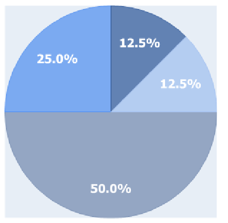
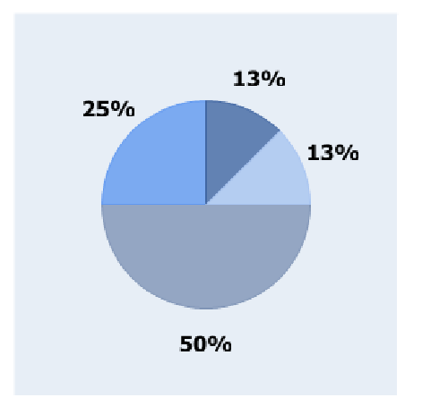

4.3.4 PiePlot
4.3.4.1 What type of data to use?
The PiePlot can be used with series of number or PiePiece. A PiePiece represents
slice in the Pie Plot, and provides various constructors:
public PiePiece(
double value)
public PiePiece(
double value , String
label)
public PiePiece(
double value , String
label,String color)
public PiePiece(
double value , String
label,String color, String fontColor);
where :
-
value:
- the PiePiece value
-
label:
- the label to be displayed on the Piece
-
color:
- the color filling the piece
-
fontColor:
- the label font color
4.3.4.2 Specific options
/** * @param offset : the label position from the edge of the plot * Negative values will place the label outside of the plot, whereas positive values will place in inside */ public void setLabelOffset(
int offset)
/** * @param precision : the precision for percentiles */ public void setPrecision(
int precision)
/** * @param font : font to be applied on the various labels */ public void setFont(String font)
/** * @param fontColor : default font color. Can be overriden by each PiePiece */ public void setFontColor(String fontColor)
Examples :
Pie chart from a Number Serie, with internal labels and default Precision
:
Chart2D chart =
new Chart2D("300px","300px");
chart.setTheme("PlotKit.blue");
PiePlot<Integer> plot =
new PiePlot<Integer>();
plot.setFont("normal␣normal␣bold␣12pt␣Tahoma");
plot.setFontColor("white");
plot.setLabelOffset(40);
List<Integer> data = Arrays.asList((
new Integer[]{4,2,1,1}));
plot.addSerie(
new Serie<Integer>(data));
chart.addPlot(plot);

Pie chart from a Number Serie, with external labels and precision = 0
:
Chart2D chart =
new Chart2D("300px","300px");
chart.setTheme("PlotKit.blue");
PiePlot<Integer> plot =
new PiePlot<Integer>();
plot.setFont("normal␣normal␣bold␣12pt␣Tahoma");
plot.setFontColor("black");
plot.setLabelOffset(
-25);
plot.setPrecision(0);
plot.addSerie(
new Serie<Integer>(Arrays.asList(
new Integer[]{4,2,1,1})));
chart.addPlot(plot);
